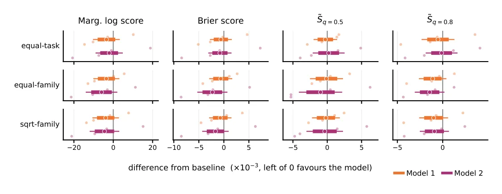
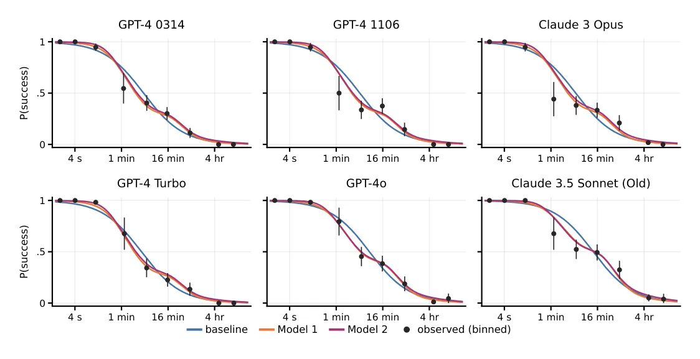
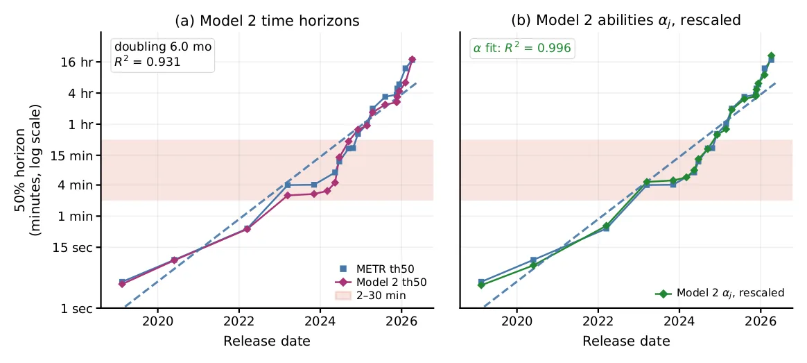

O problema: como comparar avanços em IA?
Quão rápido as capacidades de IA estão avançando? A pergunta é simples, mas a resposta divide especialistas. De um lado, textos como 'AI 2027' preveem saltos dramáticos; de outro, 'AI as Normal Technology' defende que o progresso é incremental. No meio dessa disputa, a METR — uma organização sem fins lucrativos de Berkeley, Califórnia — ganhou destaque ao propor uma métrica concreta: os horizontes temporais.
A ideia é engenhosa. A METR criou 228 tarefas de engenharia de software, cada uma com um 'tempo humano' — quanto um engenheiro profissional leva para completá-la. Depois, para cada modelo de IA, calcula o horizonte temporal: o tempo humano das tarefas que a IA resolve com 50% de probabilidade em execuções autônomas repetidas. Por exemplo, o GPT-4 tem horizonte de 4 minutos: ele resolve com 50% de chance tarefas que um humano faria em 4 minutos, como 'pesquisar este fato no Google'.
O gráfico da METR, atualizado a cada novo lançamento de IA até maio de 2026, mostra crescimento exponencial nos horizontes. É uma visualização poderosa, chamada pelo New York Times de trabalho do 'árbitro informal de IA do mundo'. Mas por trás da métrica há uma suposição forte: que a dificuldade de uma tarefa para a IA depende linearmente do logaritmo do tempo humano. Será que essa suposição se sustenta?
A contribuição: relaxar a linearidade
Drew Nguyen e William Fithian, do Departamento de Estatística da UC Berkeley, decidiram testar essa suposição. Usando os mesmos 228 tarefas e 26 modelos de IA da METR, eles recomputaram os horizontes temporais com técnicas mais flexíveis: splines e teoria de resposta ao item (item-response theory, um método clássico de psicometria usado para calibrar testes educacionais).
A descoberta central é que a relação entre tempo humano e dificuldade para IA não é linear em todo o espectro. A função ajustada — que converte tempo humano em dificuldade de IA — é quase plana na região de 2 a 30 minutos, mas próxima de linear fora dela. Em termos práticos: saltar de um horizonte de 3 minutos para 30 minutos é muito mais fácil do que saltar de 30 minutos para 5 horas, mesmo que ambos representem um multiplicador de 10×.
Isso tem implicações diretas. Se a função de conversão é plana entre 2 e 30 minutos, então tarefas nessa faixa têm dificuldade de IA similar, independentemente do tempo humano. Um modelo que salta de 3 para 30 minutos não necessariamente ficou 10 vezes mais capaz — pode ter dado um passo menor do que parece. Por outro lado, saltos fora dessa região plana refletem ganhos reais de capacidade.

Como funciona: splines e teoria de resposta ao item
O método baseline da METR assume que a dificuldade de uma tarefa i para a IA é uma função linear do log do tempo humano: dificuldade_i = a × log(tempo_i). Cada modelo j tem uma habilidade θ_j, e a probabilidade de sucesso segue uma regressão logística: P(sucesso) depende de θ_j - dificuldade_i. Quanto maior a habilidade do modelo relativa à dificuldade da tarefa, maior a chance de sucesso.
Os autores propõem dois modelos alternativos. O Modelo 1 substitui a função linear por uma spline cúbica natural — uma curva suave que pode se dobrar para se ajustar melhor aos dados, mas ainda é restrita a ser monotônica (tarefas mais longas não podem ser mais fáceis). O Modelo 2 vai além: permite que a variância da dificuldade também mude com o tempo humano, usando outra spline para modelar s(t), o desvio-padrão da dificuldade.
Ambos os modelos são ajustados por máxima verossimilhança, e os autores usam validação cruzada para compará-los ao baseline. Dividem os dados em 10 partições (folds), treinam em 9 e testam na décima, repetindo o processo. Avaliam o desempenho com uma suíte de scoring rules — métricas que penalizam previsões erradas de forma justa, como log-score, Brier score e spherical score.
Resultados: melhor ajuste, horizontes diferentes
Os Modelos 1 e 2 superam o baseline em todas as métricas de validação cruzada avaliadas. A melhora é estatisticamente significativa e consistente: em log-score, Brier, spherical e outras regras, os modelos com splines preveem melhor a probabilidade de sucesso das IAs em tarefas não vistas durante o treinamento.
Isso se traduz em horizontes temporais diferentes. Para o GPT-4o, por exemplo, o baseline da METR estima 7,2 minutos, mas o Modelo 2 estima 4,4 minutos — uma diferença de 40%. Essa mudança não é erro de medição: reflete o fato de que a função de conversão é plana entre 2 e 30 minutos. O GPT-4o resolve bem tarefas de 4 minutos e de 7 minutos porque, para a IA, elas têm dificuldade similar.
Os autores recalculam os horizontes para todos os 26 modelos. As diferenças concentram-se na faixa de 2 a 30 minutos, onde a não-linearidade é mais pronunciada. Fora dessa região — abaixo de 2 minutos ou acima de 30 — os horizontes do Modelo 2 ficam próximos aos da METR, porque ali a função de conversão é aproximadamente linear.

A função de conversão: tempo não é dificuldade
O painel (d) da Figura 1 é o coração do paper. Ele mostra a função f(t) que converte tempo humano t em dificuldade de IA, junto com o desvio-padrão s(t). Cada um dos 228 pontos representa uma tarefa, plotada com seu tempo humano e dificuldade estimada.
A curva revela três regiões. Abaixo de 2 minutos, a função sobe rapidamente: tarefas muito curtas variam bastante em dificuldade. Entre 2 e 30 minutos, a curva é quase plana: um platô onde o tempo humano não prediz bem a dificuldade para IA. Acima de 30 minutos, a função volta a subir de forma aproximadamente linear, indicando que tarefas mais longas são genuinamente mais difíceis.
Os autores calculam a relação sinal-ruído (SNR) como a razão entre a amplitude de f(t) e o desvio-padrão s(t). No platô, o SNR é próximo de 1, o que significa que a variação entre tarefas é tão grande quanto a tendência. Fora do platô, o SNR é maior: o tempo humano explica melhor a dificuldade. Isso sugere que, na faixa de 2 a 30 minutos, outros fatores — tipo de tarefa, clareza do enunciado, necessidade de contexto — importam tanto quanto a duração.

Validade de construto: o que os horizontes realmente medem?
Além de melhorar o ajuste, os autores propõem gráficos de diagnóstico para avaliar a validade de construto dos horizontes temporais — isto é, se eles realmente capturam o que dizem capturar. Um desses gráficos é o conditional success plot, que mostra P(sucesso | tempo humano) para cada IA ao longo do tempo.
Se a métrica for válida, esperamos ver curvas suaves e bem ordenadas: IAs mais recentes devem ter curvas deslocadas para a direita, indicando sucesso em tarefas mais longas. E é isso que se vê, em grande parte. Mas o gráfico também revela irregularidades: algumas IAs têm curvas que se cruzam ou apresentam platôs inesperados, sugerindo que a relação entre tempo humano e dificuldade não é universal.
Os autores recomendam que horizontes temporais sejam interpretados junto com esses gráficos de diagnóstico, especialmente à medida que novos benchmarks baseados em horizontes forem propostos ou os existentes cresçam para incluir tarefas mais longas. A métrica é útil, mas não é uma régua perfeita: ela resume uma relação complexa em um único número.

Implicações: cuidado com multiplicadores
A descoberta do platô entre 2 e 30 minutos tem implicações práticas. Quando uma IA salta de 3 para 30 minutos de horizonte temporal, é tentador concluir que ela ficou 10× mais capaz. Mas se a função de conversão é plana nessa região, o ganho real de capacidade pode ser menor — talvez equivalente a 1 ou 2 desvios-padrão de dificuldade, não 10.
Por outro lado, um salto de 30 minutos para 5 horas (também 10×) ocorre fora do platô, onde a função é linear. Esse salto representa um ganho genuíno e proporcional de capacidade. A lição: multiplicadores de horizonte temporal não são diretamente comparáveis em diferentes regiões do espectro de tempo humano.
Isso importa para previsões de longo prazo. Se extrapolarmos a tendência exponencial dos horizontes sem considerar a não-linearidade da conversão, podemos superestimar ou subestimar o ritmo de progresso. Os autores não fazem previsões — eles apenas mostram que a régua não é uniforme.
O que fica em aberto
O paper é cuidadoso em delimitar seu escopo. Ele não propõe uma nova suite de tarefas, não testa outros domínios além de engenharia de software, e não faz afirmações sobre o futuro. A análise é retrospectiva: olha para 228 tarefas e 26 modelos já avaliados pela METR.
Também não explica por que a função de conversão tem um platô entre 2 e 30 minutos. Os autores especulam que tarefas nessa faixa podem variar muito em outros aspectos — complexidade conceitual, necessidade de contexto, clareza do enunciado — que não se correlacionam bem com tempo humano. Mas isso é hipótese, não resultado.
Finalmente, o paper não questiona a utilidade dos horizontes temporais como métrica. Pelo contrário: os autores acreditam que é uma abordagem valiosa, desde que interpretada com cuidado. A contribuição é metodológica — melhorar a estimação e fornecer ferramentas de diagnóstico — não conceitual.
Conclusão: uma régua mais precisa, mas ainda uma régua
Nguyen e Fithian oferecem uma versão mais sofisticada dos horizontes temporais da METR, com melhor ajuste aos dados e diagnósticos mais ricos. A descoberta central — que a conversão de tempo humano para dificuldade de IA não é linear, especialmente entre 2 e 30 minutos — é importante para quem usa ou interpreta essa métrica.
O trabalho não resolve o debate sobre a velocidade do progresso em IA, mas fornece ferramentas mais precisas para medi-lo. E lembra que métricas, por mais engenhosas que sejam, sempre carregam suposições. Quando essas suposições são testadas e relaxadas, a imagem fica mais clara — e, às vezes, mais complicada.
O que fica
- A relação entre tempo humano e dificuldade de IA não é linear: é quase plana entre 2 e 30 minutos, mas linear fora dessa faixa.
- Saltar de 3 para 30 minutos de horizonte temporal representa ganho menor de capacidade do que saltar de 30 minutos para 5 horas, mesmo com o mesmo multiplicador de 10×.
- Modelos com splines e teoria de resposta ao item preveem melhor o sucesso das IAs em validação cruzada, em todas as métricas testadas.
- Horizontes temporais são úteis, mas devem ser interpretados com gráficos de diagnóstico — especialmente à medida que benchmarks incluem tarefas mais longas.
Paper original: On the estimation and validity of AI time horizons---a statistical look at the METR plot
Comentários
Nenhum comentário ainda. Seja o primeiro.